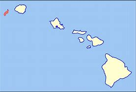
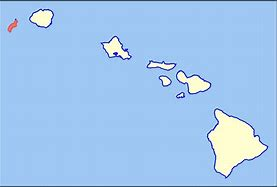

Click Me!
Niihau Size and Geography
Niihau spans 69.5 square miles (180 km²) and lies 17.5 miles (28.2 km) southwest of Kauai across the Kaulakahi Channel. The islands geography is characterized by its arid lowland and a maximum elevation of 1,280 feet (390 m) at Mount Pānīau. Niihaus dimensions are approximately 6.2 miles by 18.6 miles (10 km x 30 km), and it is privately owned, with access highly restricted. Despite its small size, the island plays a significant role in preserving native Hawaiian culture and language